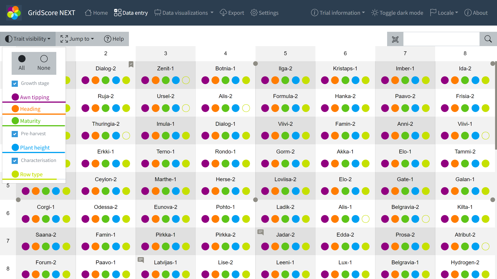

User interface
GridScore bundles a huge amount of functionalities into a small app empowering your data collection in the field, glasshouse or out and about. Once a trial has been created, GridScore works completely offline, so no data connectivity is required for both data collection and visualization.
Easily create trials on your laptop by importing information from different sources. Define your trial layout and trait definitions. Share the created trial with collaborators or data collectors using QR codes.
Efficiently and accurately collect phenotypic data for large plot trials. Utilise barcodes or guided walks to navigate the trial. Synchronize data collection between multiple users.
Gain insights into your data with heatmaps, box plots and bar charts. Easily identify patterns, potential outliers and correlations. All while out in the field or back in your office.
Export your data in a variety of formats for further processing. Breeding API (BrAPI) and Germinate Data Template support is built-in to simplify data transfer to other systems.
GridScore is feature-packed but beginner friendly at the same time catering to new and expert users.
Import your own trial layout from other tools or use FielDHub to create a layout. Simply transfer your design to GridScore. A variety of import formats are supported to ensure you get up and running quickly.
GridScore uses QR codes to easily share trials between collaborators and data collectors. Simply generate and scan QR codes to transfer all required information to another device. Collected data is kept synchronized between devices for data consistency.
Let GridScore guide you through the trial in one of 16 pre-defined orders. Collect data for a plot, then move on to the next one in the order. Audio feedback will instruct you to turn when required.
Quickly validate your location in the trial using GPS information. Keep track of your movement as you walk through the trial. Recorded data is geotagged for future reference.
Take photos of plots, plants or anything else as you collect data. Photos are automatically tagged with timestamp, GPS location and, optionally, any traits.
Record trial or plot comments with your voice. Speech recognition will do the rest. Audio feedback is used throughout the app to give you immediate feedback on collected data or selected plots.
Clicking on an image will give you more information about the shown feature or functionality.
The main data view of GridScore is a visual representation of the field trial. Each cell represents a plot and the coloured circles represent the traits. Filled circles indicate data that has been collected while empty circles show missing data.

Data is collected for the defined traits based on their data type. In this example we see date-based traits. The data input field will allow you to pick from a calendar or you can use the arrow buttons to the side to step through time.
Heatmaps are a useful tool in the identification of patterns in your data or spotting outliers. The heatmap on the left represents the field layout where darker shades show a later "awn tipping" date. The right shows a replicate heatmap plotting reps against each other to spot errors.
Box plots provide an overview over the data distribution for a trait. This can highlight potential issues with the data that has been collected in the form of outliers, but box plots can also just give you an indication of the overall performance of the trial.
If trait data is collected multiple times over time, GridScore can show the development of each plot for a certain trait as time progresses. This can highlight which plots have the fastest/slowest gain/loss within the trait as well as when certain events may have taken place.
If the corner points of the trial have been defined, GridScore can draw the location of each individual plot on a map. Your current location will be highlighted and clicking on a plot shows all data collected for this plot.
Load multiple trials on your device and easily switch between them. Synchronize the collected data with collaborators, add traits or duplicate existing trials.